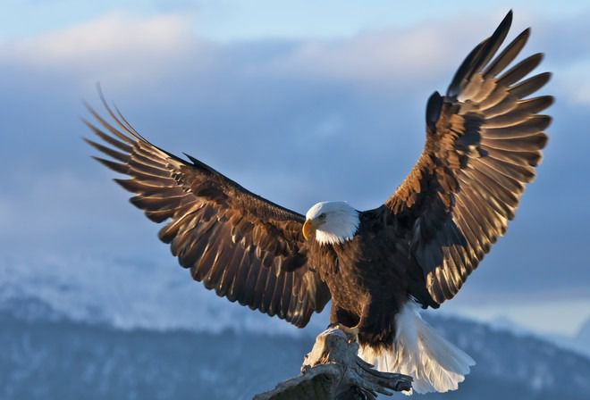

|  |
ОрелБільшість видів орлів відрізняють значні розміри, довжина тіла деяких особин досягає 80-95 см, самка орла набагато більша за самця. Вага орла може становити 3-7 кг. Виняток становлять дрібні види: орел-карлик і степовий орел. Представників роду відрізняє масивне тіло з розвиненою мускулатурою і досить довгі, сильні ноги, оперення до пальців. Голова орла компактна, шия міцна і мускулиста. Рухливість великих очних яблук невелика, але добре розвинена шия з лишком компенсує цей недолік. Значні пазурі і міцний дзьоб орла мають загнуті закінчення, що робить птицю неперевершеним хижаком. Протягом життя дзьоб і кігті орла мають властивість рости, але птах сточує їх в процесі своєї життєдіяльності. Довгі широкі крила орла в розмаху досягають 2,5 метра, що дозволяє хижакові довго парити на відстані понад 700 метрів над землею. Хвіст орла укорочений і вузький, у деяких видів клиновидний і розпушений віялом. Африканський чубатий і гребінчастий орли мають «прикрасою» у вигляді пучка довгого пір’я, що вінчають голову. Природа наділила орла надзвичайно гострим зором, завдяки чому хижак виглядає дрібну здобич (ящірок, змій, мишей) з величезної висоти. Наприклад, орел беркут зауважує зайця на відстані до 2 км. За допомогою периферичного зору птах орел може оглядати площа до 12 квадратних кілометрів. Слух використовується в основному для спілкування, а ось нюх у орла розвинене слабо. Забарвлення оперення орла, в залежності від виду, може бути однотонним з плямами або контрастний. Наприклад, забарвлення беркута чорно-бурий з золотистими пір’ям на потилиці, чому англійська назва птиці значиться, як "золотий орел" (Golden Eagle). Політ орла відрізняється особливою маневреністю з потужними і глибокими помахами крил. Орел – птах, яка навіть при сильних поривах вітру легко справляється з повітряними потоками і, помітивши потенційну здобич, здатна пікірувати зі швидкістю до 320 км / ч. Тривалість життя орла становить близько 30 років, особливо великі види живуть до 40-50 років. |
Аудіо запис орла |
Відео запис орла |